はじめに
お客さんは自分のスマホから注文します。お店は注文帳で注文を受けて調理し、できあがったら大画面に番号を出して呼び出します。お店の前で直接注文する人はレジで受け付けます。
使う画面と、だれが使うか
| 画面 | 何をする画面か | 使う人 | 開き方 |
|---|---|---|---|
| 管理画面 | 店舗の設定、スタッフ用 PIN、メニュー登録、売上、注文の検索と修正 | 店長 | /manage を開き、運営から伝えられたメールアドレスとパスワードでログイン |
| 注文帳・レジ | 注文を受けて進める、対面の注文を会計する、売り切れを設定する | 当日のスタッフ全員（店長も） | 店長から伝えられる店の URL を開き、PIN を入れる |
| 大画面（呼び出し番号） | できあがった番号をお客さんに見せる（モニターに映しっぱなし） | お客さん向け（スタッフが映す） | 店長から伝えられる大画面の URL を開く（ログインなし） |
用意するもの
- 注文帳・レジ用のタブレットかスマホ（横向きのタブレットがいちばん見やすい）
- 大画面用のモニター（ノートパソコンやタブレットをつないで映す）
- 充電器・延長コード、つながる Wi-Fi か携帯回線
画面の言葉が少し違います。このマニュアルは飲食の店の言葉で書いています。
例: 受付 → 調理中 → お渡し待ち（飲食）は、待ち → 呼び出し中（飲食以外）。「調理をはじめる」「できあがり」「お渡し済み」は、「呼び出す」「完了」。
言葉の意味
- 整理番号（お呼び出し番号）
- 注文ごとの番号です（例: A-12）。お客さんはこの番号で呼ばれ、受け取るときに見せます。
- 頭文字
- 整理番号の最初の文字（A-12 の「A」）。店ごとに決まっていて、運営が決めます。
- 受付・調理中・お渡し待ち・お渡し済み
- 注文の進み具合です。注文帳のボタンで、左から右へ進めます。
- 未受取
- 呼び出したのに取りに来なかったので、取り置きをやめた注文です。
- 取り消し
- 注文をなかったことにします。元に戻せるのは店長だけです。
- 売り切れ
- お客さんが注文できなくなります。商品ごとにも、選択肢（トッピングなど）ごとにも設定できます。
- PIN
- 注文帳・レジに入るための、6〜12桁の数字です。店長が決めて、スタッフに伝えます。
- 開催回
- 学園祭の回（例: 第60回 紫苑祭）。売上や注文は開催回ごとに分かれています。
第1部 店長編管理画面（/manage）を使う作業。困ったときの連絡先は運営（システム管理者）です。
1. 前日までの準備
1-1. 管理画面にログインする
- ブラウザで
https://sf.a-kiis.com/manageを開きます。 - 運営から伝えられたメールアドレスとパスワードを入れて、ログイン を押します。

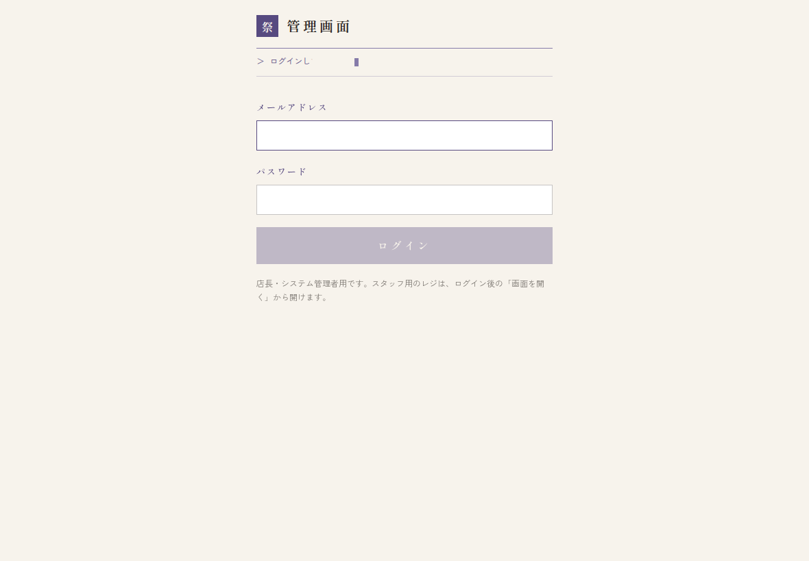
ログインすると、左（スマホでは上）にメニューが出ます。商品 注文 売上 店舗設定 アカウント と、注文帳・レジと大画面を開くリンク レジ ↗ 大画面 ↗ です。

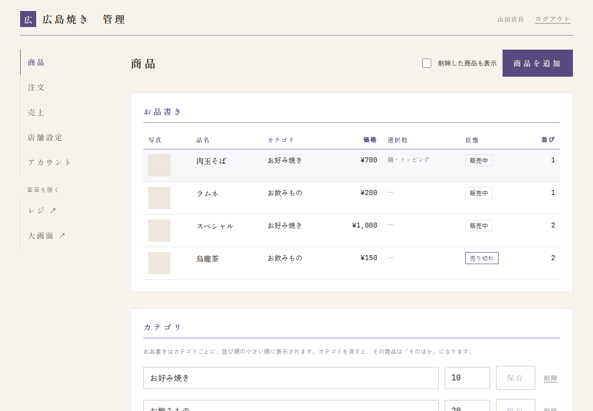
1-2. パスワードを変える
最初に渡されたパスワードは、自分だけが知るものに変えてください。
- メニューの アカウント を開きます。
- 今のパスワードと、新しいパスワード（10文字以上）を2回入れて、変更のボタンを押します。

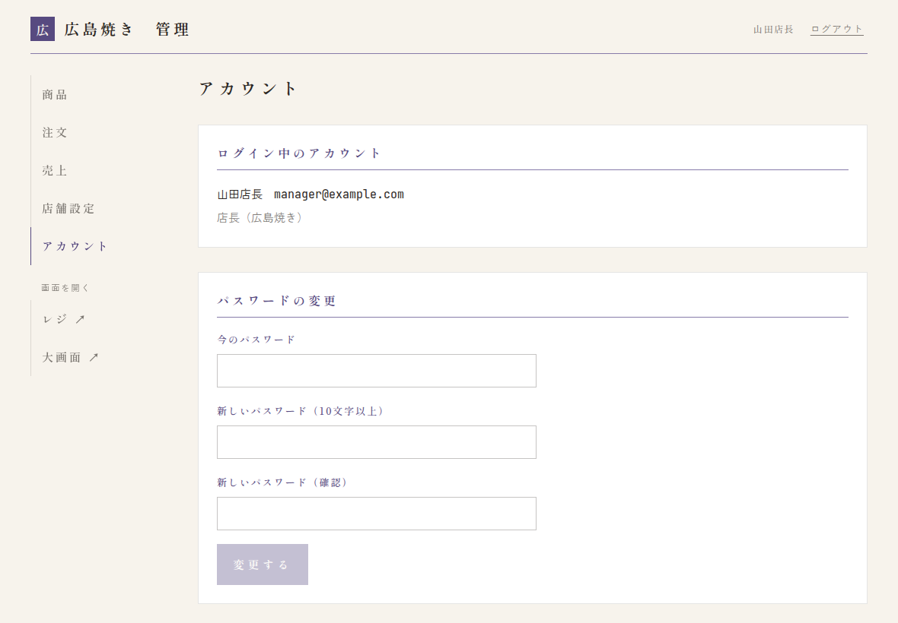
運営（システム管理者）に連絡してください。
1-3. 店舗設定を確かめる
メニューの 店舗設定 を開きます。変えたら、いちばん下の 保存する を押してください。

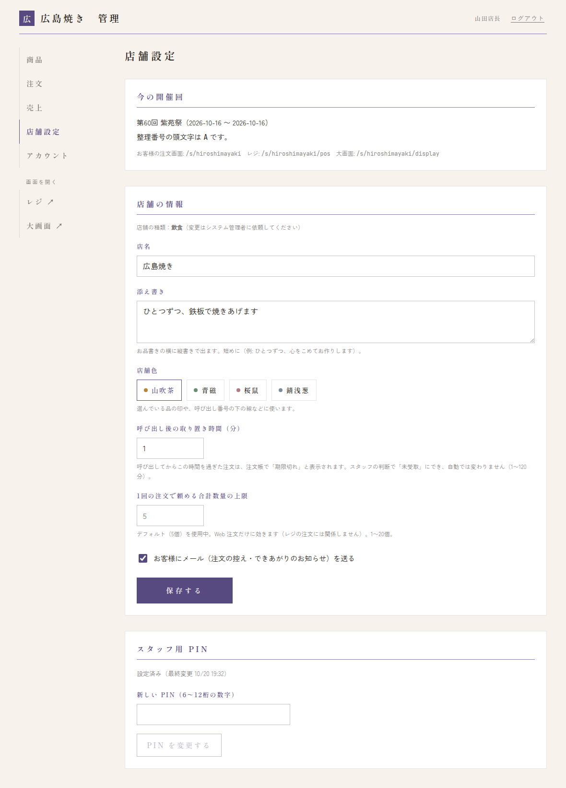
| 項目 | 内容 |
|---|---|
| 今の開催回 | 今の学園祭と、整理番号の頭文字（例: A）。お客さんの注文画面・レジ・大画面の URL もここに出ます（スタッフに伝える URL です）。 |
| 店舗の種類 | 飲食／飲食以外。変えたいときは運営に連絡します。 |
| 店名・添え書き | お客さんの画面に出ます。添え書きはお品書きの横に縦書きで出るので短めに。 |
| 店舗色 | 選んでいる品の印や、呼び出し番号の下の線などに使う色です。 |
| 呼び出し後の取り置き時間（分） | 呼び出してからこの時間を過ぎた注文は、注文帳で「期限切れ」と出ます（1〜120分）。自動で取り消されることはありません。 |
| 1回の注文で頼める合計数量の上限 | Web 注文1回で頼める個数の上限です。空欄のときはデフォルトの値を使います（デフォルトに戻す で戻せます）。レジの注文には関係しません。 |
| お客さんにメールを送る | メールアドレスを入れたお客さんに、注文の控えとできあがりの知らせを送ります。 |
1-4. スタッフ用 PIN を設定する
スタッフが注文帳・レジに入るための数字です。店舗設定のいちばん下にあります。
- 新しい PIN（6〜12桁の数字）を入れます。誕生日や「123456」のような、すぐ分かる数字は避けてください。
- PIN を変更する を押します。
- 当日、スタッフにだけ口頭などで伝えます（掲示したり、SNS に書いたりしない）。

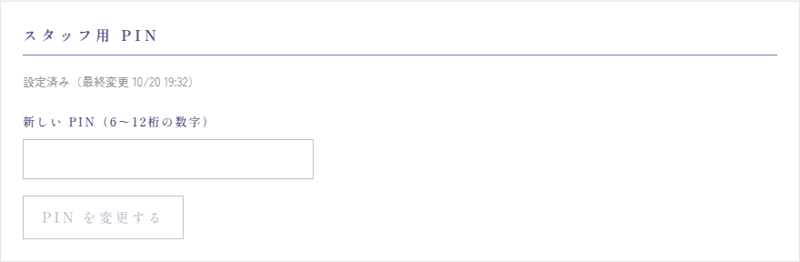
ログイン中のスタッフは全員ログアウトになり、新しい PIN で入り直す必要があります。営業中に変えるのは、PIN が外にもれたときだけにしてください。
1-5. メニューを登録する
メニューの 商品 を開きます。
- カテゴリを作る: 画面の下の「カテゴリ」に名前（例: お好み焼き、お飲みもの）を入れて 追加。並び順の数字が小さいほど上に出ます。
- 商品を足す: 右上の 商品を追加 を押し、品名・価格（円）・カテゴリ・並び順・説明を入れて 保存する。
- 写真をのせる（任意）: 一度保存した商品を開くと、写真を登録できます（JPEG・PNG・WebP、5MBまで）。
- 選択肢をつける（任意）: 麺の種類やトッピングなど。下の囲みを見てください。

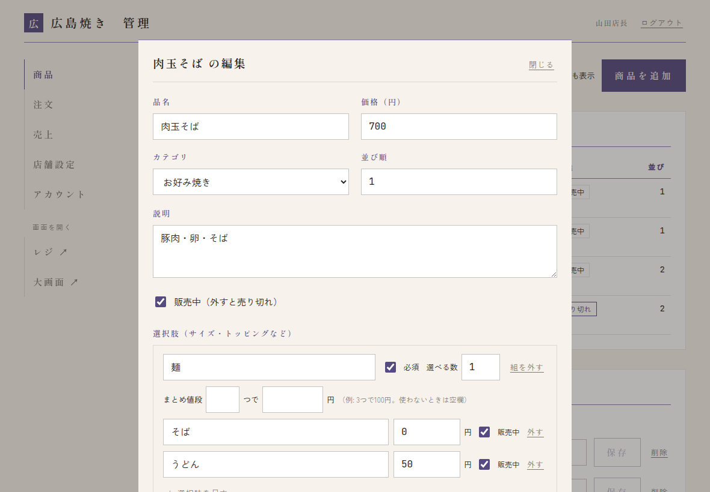
選択肢の組を足す で組（例: 麺、トッピング）を作り、＋ 選択肢を足す で中身（例: そば、うどん）を足します。
- 必須: お客さんが必ず1つ選ぶ組（例: 麺）にチェック。
- 選べる数: その組からいくつまで選べるか（例: トッピングは2つまで）。
- 追加料金: 選んだときに足す金額（例: うどん +50円。なければ 0）。
- まとめ値段: 「3つで100円」のように、まとめて安くするとき。使わないときは空欄。
- 売り切れにする: 「販売中（外すと売り切れ）」のチェックを外します。当日はレジからも切り替えられます（→ 6-5）。
- お品書きから消す: 商品を開いて この商品を削除。売上の記録は残り、削除した商品も表示 から お品書きに戻す で戻せます。
登録したら、スマホでお客さんの注文画面（店舗設定にある URL）を開いて、見え方を確かめてください。
1-6. 機材の動作確認（当日の前に一度）
- 管理画面の レジ ↗ で注文帳・レジを開き、PIN でログインできるか確かめます（→ 5. 開店前）。
- 大画面 ↗ をモニターに映して、音が出るか確かめます。
- 自分のスマホからテスト注文をして、注文帳に入る → 進める → 大画面に番号が出る、まで試します。
- テスト注文は注文帳の 取り消し で消しておきます。
2. 当日（店長として）
3. 閉店後
3-1. 売上を確かめる
メニューの 売上 を開きます。上の欄で、開催回・時間帯の区切り・時間帯を見る日を選べます。

- 売上・注文・客単価・販売個数: 支払い済みの注文だけを数えます（取り消し・未受取は数えません）。
- 日別・時間帯別・商品別: どの日・どの時間に、何が売れたか。選択肢の選ばれ方も見られます。
- 注文の経路: レジと Web 注文の割合。
- 待ち時間: 注文からできあがりまでの時間。
- ロス: 取り消しと、受け取りに来なかった注文の件数・金額。
- 開催回の比較: これまでの開催回との比較。
- CSV を書き出す: 右上のボタンで、注文の明細を CSV（Excel で開けるファイル）で保存できます。
3-2. 注文を検索・修正する
メニューの 注文 を開きます。
- 開催回を選びます（最初は今の開催回。「すべての開催回」も選べます）。
- 整理番号（例: A-12）・お名前・メールアドレス・営業日・状態で絞り込み、検索 を押します。
- 一覧の注文を押すと、くわしい内容と「修正」の欄が開きます。


- 修正: 状態と「支払い済み」を直して 修正を保存。状態を戻すこともできます（例: 間違えてお渡し済みにした注文をお渡し待ちに戻す、取り消し・未受取を元に戻す）。
- 記録に残ります: お客さんの個人情報を扱うので、検索・閲覧・修正はすべて記録されます。必要なときだけ使ってください。
- 個人情報は消えます: お客さんの名前・メールアドレスは、学園祭の終了から一定の期間がたつと消されます。そのあとは名前・メールでは検索できません（整理番号ではできます）。
3-3. 次の日に向けて
- 売り切れにした商品・選択肢を、販売中に戻します（レジの売り切れ設定か、管理画面の商品から）。
- 取り置き時間・数量の上限を見直します（→ 1-3）。
- PIN を変えたときは、翌日スタッフに新しい PIN を伝えます。
4. 困ったとき（店長）
ログインできない・パスワードを忘れた
運営（システム管理者）に連絡してください。何度も間違えると、しばらくログインできなくなります。
店舗の種類・整理番号の頭文字・URL を変えたい
店長の画面では変えられません。運営に連絡してください。
スタッフが間違えて進めた・取り消した・未受取にした
管理画面の 注文 で、その注文の状態を直してください（→ 3-2）。
お客さんから「注文できない」と言われた
まず次を確かめます。
- 売り切れになっていないか（必須の選択肢がぜんぶ売り切れだと、その商品は頼めません）
- 1回の数量の上限を超えていないか（→ 1-3）
- 画面に「受付を中止しています」と出ていないか（学園祭全体の一時中止）
どれでもなければ、少し時間をおいてやり直してもらい、それでもだめなら運営に連絡してください。
「受付を中止しています」と出た
運営が学園祭全体の受付を一時的に止めています。運営が再開するまで、新しい注文は入りません（受け付けた注文は、ふだんどおり進められます）。
第2部 スタッフ編注文帳・レジと大画面を使う作業。困ったときの連絡先は店長です。
5. 開店前
5-1. 注文帳・レジにログインする
- 店長から伝えられた店の URL（
https://sf.a-kiis.com/s/（店のID）/pos）を開きます。 - 店長から伝えられた PIN を入れて、ログイン を押します。

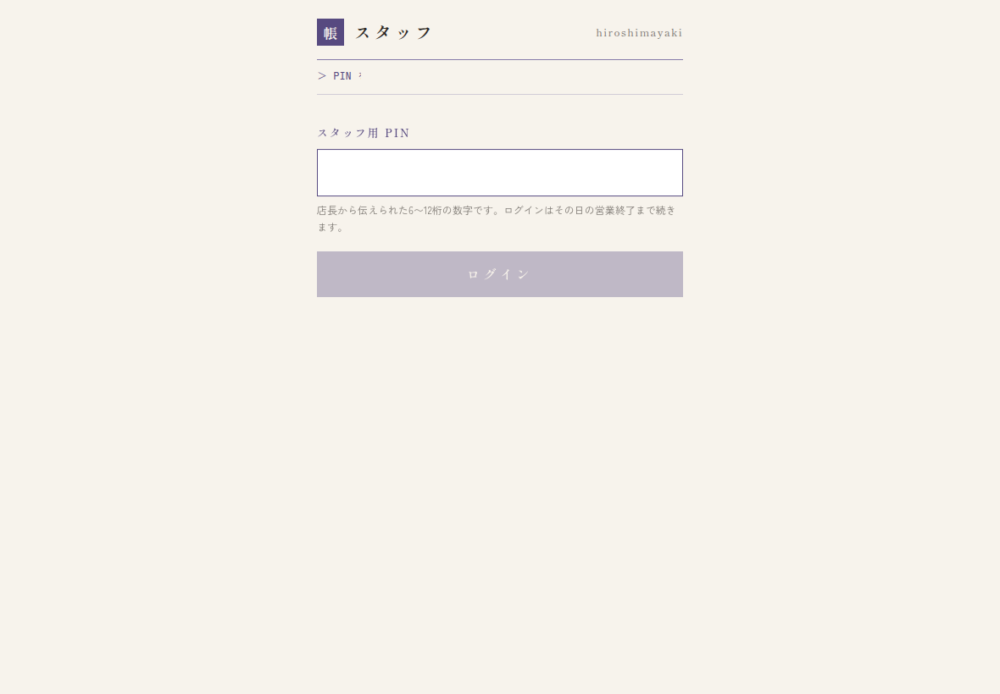
ログインは、その日の営業終了まで続きます（毎回入れ直す必要はありません）。
5-2. 画面の見方

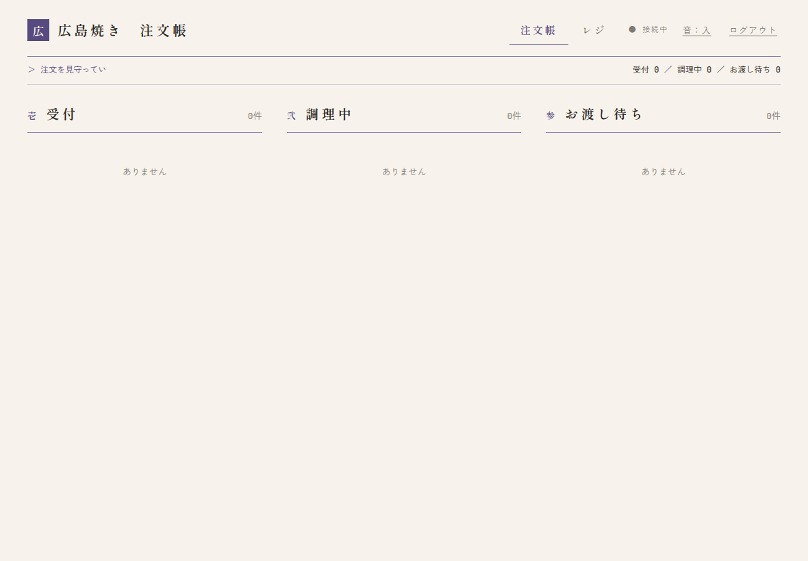
- 注文帳 レジ: 右上で画面を切り替えます。
- ● 接続中: 注文がすぐ届く状態です。○ 再接続中 のときは、つながり直すのを待ちます（→ 7. 困ったとき）。
- 音：入: 注文が入ったときの音です（次の 5-3）。
- ログアウト: 閉店するときに押します。
5-3. 注文が入ったときの音をオンにする
注文が入ると「ピンポン」と鳴ります。最初は 音：入（タップで有効） と出ているので、画面のどこかを一度タップしてください。音：入 に変われば鳴るようになります。タブレットの音量とマナーモードも確かめてください。
5-4. 大画面をモニターに映す
- モニターにつないだ機器で、店長から伝えられた大画面の URL（
https://sf.a-kiis.com/s/（店のID）/display）を開きます。ログインはいりません。 - 全画面表示にします（パソコンなら F11 キー）。
- 右上の 音：切 を押して 音：入 にします。番号が出るときに音が鳴ります。

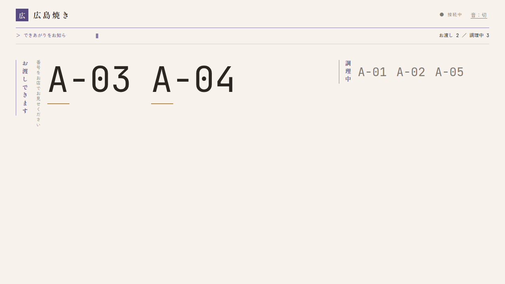
画面が暗くならないよう、機器のスリープ（画面オフ）の設定は切っておくと安心です。
5-5. 売り切れがあれば先に設定する
最初から用意できない商品があれば、開店前に売り切れにしておきます（→ 6-5）。
6. 営業中
6-1. Web 注文の流れ
| お客さん | お店 | |
|---|---|---|
| 1 | スマホで注文する | 注文帳の「受付」に入り、「ピンポン」と鳴る |
| 2 | 整理番号の画面で待つ | 調理をはじめる → 調理する |
| 3 | 呼ばれると、スマホに音と画面で知らせが来る | できあがり → 大画面に番号が出る |
| 4 | 番号を見せて受け取り、お代金を払う | 番号を確かめて渡し、お代金を受け取る → お渡し済み |
6-2. 注文帳の使い方

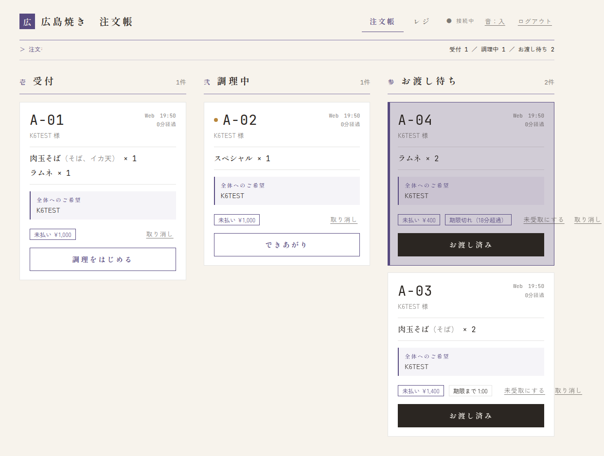
注文は1件ずつカードになっていて、左の列から右の列へ進めます。
- カードの見方: 整理番号（例: A-01）、Web かレジか、注文した時刻と何分たったか、お名前、品と選択肢・数、ご希望、未払い ¥… か 支払済。
- 進め方: カードの下のボタンを押します。調理をはじめる → できあがり → お渡し済み。
- できあがり を押すと、大画面に番号が出て、お客さんのスマホにも知らせが届きます。
- 品ごとのご希望（例: ネギ抜き）は品の下に、全体へのご希望はカードの中ほどに出ます。必ず見てから作ってください。
注文帳は何台で開いても同じ内容になります（例: 調理場とお渡し口で1台ずつ）。だれかが進めると、ほかの端末にもすぐ反映されます。
6-3. お渡しとお代金
Web 注文のお代金は、受け取りのときにいただきます。
- お客さんのスマホの整理番号を見せてもらい、カードの番号と同じか確かめます。
- 品を渡して、カードの金額のお代金を受け取ります。
- お渡し済み を押します。未払いの注文では確認が出るので、金額を確かめて 受け取って、お渡し済みにする を押します。

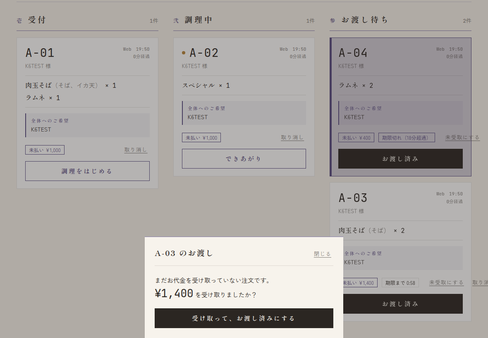
6-4. レジ（お店の前での注文）
右上の レジ を押します。
- 商品を押すと、右（スマホでは下）の「お会計」に入ります。選択肢のある商品は、選ぶ画面が出ます。
- 数は − + で変えます。品ごとのご希望は ＋ ご希望 から。
- お預かりに受け取った金額を入れます（ちょうど ¥1,000 などのボタンも使えます）。お釣りが出ます。
- 会計を確定 を押します。
- 「会計が終わりました」に出る整理番号をお客さんに伝えて、次のお客様へ を押します。


レジの注文も注文帳に入ります（支払い済み）。あとは Web 注文と同じように進めます。
6-5. 売り切れの設定
- レジの画面で 売り切れを設定する を押します。
- 商品を押すと、押したとたんに売り切れ／販売中が切り替わります。
- 選択肢のある商品を押すと、選択肢ごと（例: トッピングの1つだけ）に切り替える画面が出ます。
- 終わったら 売り切れ設定を終える を押します。


切り替えは、すぐお客さんの画面にも反映されます。
6-6. 取りに来ないお客さん（取り置き期限と未受取）
お渡し待ちのカードには、受け取りの期限までの残り時間（期限まで ○:○○）が出ます。期限は店長が決めた取り置き時間で決まります。

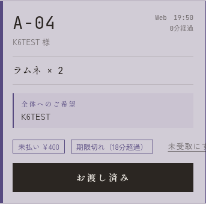
- 期限を過ぎると 期限切れ（○分超過） と出て、列のいちばん上に来ます。時間で勝手に消えることはありません。
- 来ないと判断したら 未受取にする を押します。確認が出るので、もう一度 未受取にする。取り置きをやめて、品は店頭で売ってかまいません。
- 期限の前でも押せますが、確認に「まだ期限前です」と出ます。
- お客さんの画面には「受け取り期限を過ぎたため、ご注文の取り置きを終了しました。店頭でお声がけください」と出ます。あとで来た人には、店頭で相談してください。

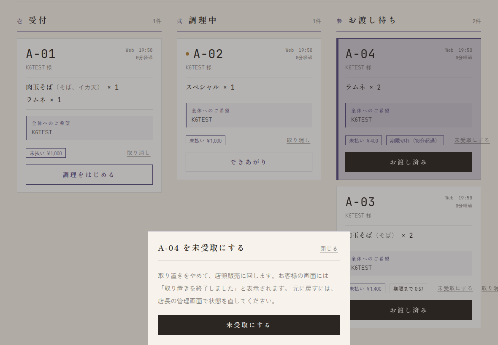
6-7. 注文の取り消し
- カードの 取り消し を押し、理由（任意。例: 来られなかった）を入れて 取り消す。
- 支払い済みの注文（レジの注文など）を取り消したときは、返金を忘れずに。
- お客さんは、調理が始まる前ならスマホから自分で取り消せます。取り消された注文は注文帳から消えます。
間違えたときは、すぐ店長に連絡してください（店長が管理画面で直せます）。
6-8. お客さんの画面（聞かれたときのために）
お客さんはスマホで、お店の一覧 → お品書き → 注文の確認 → 注文状況、と進みます。


- 呼ばれると、音と画面いっぱいの表示で知らせます（画面を開いたまま待ってもらいます）。
- iPhone はマナーモードだと音が鳴らないことがあります。
- 調理が始まる前なら、この画面から注文を取り消せます。
- 画面を閉じてしまった人は、お店の一覧の 番号で受付状況を確かめる から、整理番号で今の状態を確かめられます。
7. 困ったとき（スタッフ）
「○ 再接続中」が消えない
Wi-Fi や電波を確かめてください。つながれば自動で戻り、受け付けた注文が消えることはありません。長く続くときは、画面を読み込み直します。
急にログイン画面に戻った
PIN が変わったか、ログインの期限が切れました。店長に PIN を確かめて、入れ直してください。
注文が入っても音が鳴らない
右上が 音：入 になっているか、画面を一度タップしたか、端末の音量・マナーモードを確かめてください。画面を読み込み直したときは、もう一度タップが必要です。
「ほかの端末で操作されました」と出た
ほかの端末で、同じ注文が先に進められました。画面は最新の状態に直るので、カードの位置を確かめてください。
間違えて進めた・取り消した・未受取にした
注文帳では元に戻せません。すぐ店長に連絡してください（店長が管理画面で直せます）。
「受付を中止しています」と出た
学園祭全体の受付が一時的に止まっています。再開するまで新しい注文は入らず、レジでも会計できません。受け付けた注文はふだんどおり進めてください。店長に知らせてください。
お客さんが「注文できない」と言っている
- 売り切れになっていないか
- 1回に頼める数（合計の個数）を超えていないか
- 少し時間をおいてやり直してもらう
解決しなければ、店長に連絡してください。急ぐときはレジで受け付けてもかまいません。
大画面が暗くなる・番号が出ない
全画面表示になっているか、機器のスリープが切ってあるかを確かめ、画面を読み込み直してください。右上が「接続中」になっていれば番号は届きます。
8. 閉店するとき
- 注文帳に、お渡し待ち・受付の注文が残っていないか確かめます。残っていたら店長に相談します。
- 注文帳・レジは右上の ログアウト を押します。
- 大画面のページを閉じます。
- 機材を片付けて、充電しておきます。
付録印刷して使えます。
A. 店長用チェックリスト
前日まで
- 管理画面にログインできる・パスワードを変えた
- 店舗設定（店名・添え書き・取り置き時間・数量の上限・メール）を確かめた
- スタッフ用 PIN を設定した
- メニュー（カテゴリ・値段・選択肢・写真）を登録し、お客さんの画面で確かめた
- 注文帳・レジ・大画面を開いて、テスト注文で一通り試した（テスト注文は取り消した）
当日 開店前
- スタッフに注文帳・レジの URL と PIN、大画面の URL を伝えた
- 機材の配置・電源・通信を確かめた
- スタッフのチェックリスト（開店前）が終わった
閉店後
- 注文帳に残っている注文がないか確かめた
- 売上を確かめた（必要なら CSV を書き出した）
- 次の日に向けて、売り切れを戻した
B. スタッフ用チェックリスト
開店前
- 注文帳・レジに PIN でログインした
- 右上が「● 接続中」になっている
- 画面をタップして「音：入」になった・端末の音量を上げた
- 大画面をモニターに全画面で映し、「音：入」にした
- 最初から無い商品を売り切れにした
営業中
- 「できあがり」を押したら、大画面に番号が出ている
- お渡しのときは、整理番号を確かめてからお代金を受け取る
- 期限切れのカードがないか、ときどき見る
- 困ったら店長に連絡する
閉店時
- お渡し待ち・受付が残っていない
- 注文帳・レジをログアウトした・大画面を閉じた
- 機材を片付けて充電した